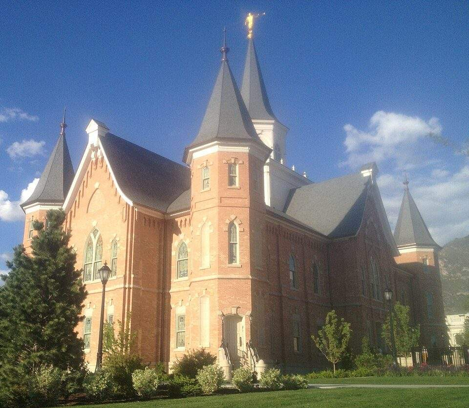
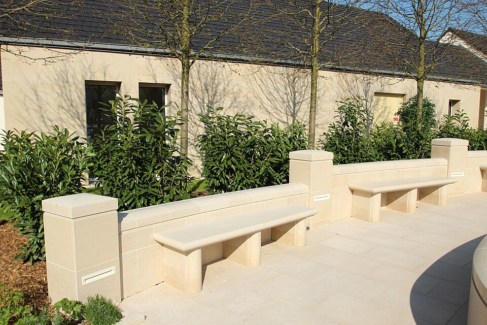
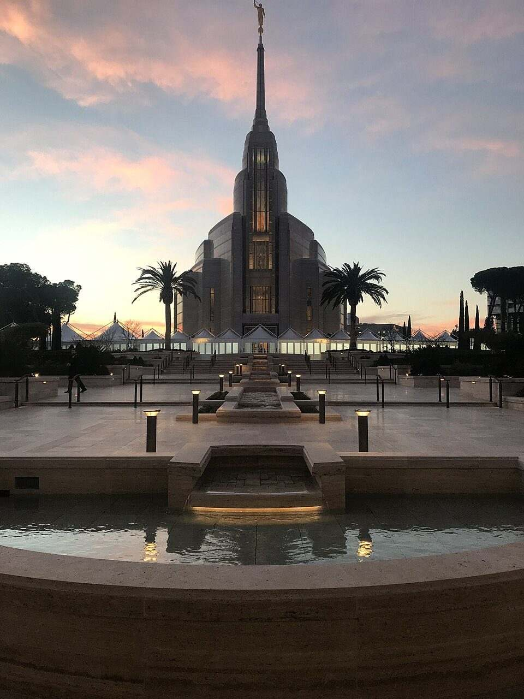
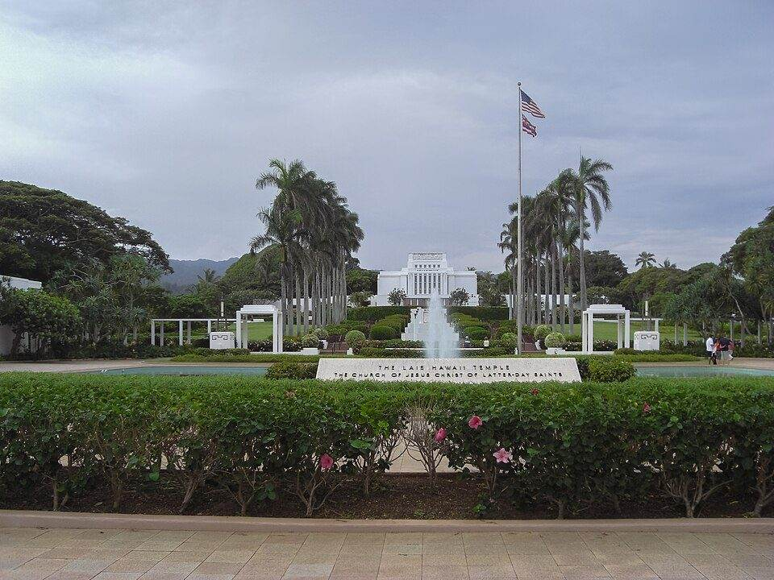
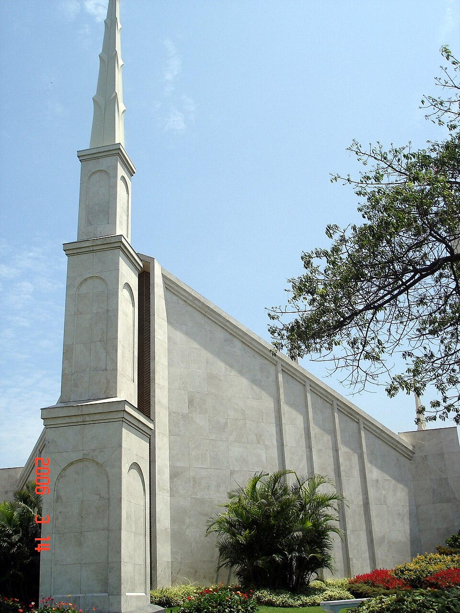
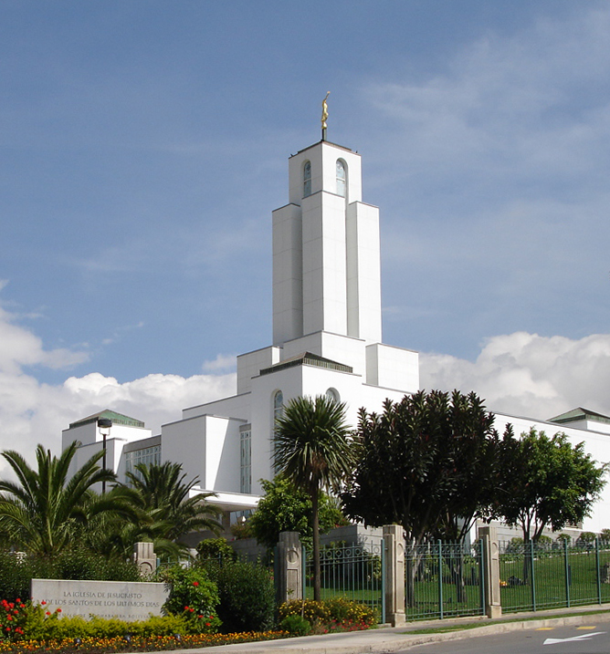

Temple Album
☰
Home
Old
New
Large
Small
Home
Salt Lake Temple

Provo City Center Temple

Paris France Temple

Rome Italy Temple
Washington D.C. Temple

Laie Hawaii Temple
Oakland California Temple

Lima Peru Temple

Cochabamba Bolivia Temple